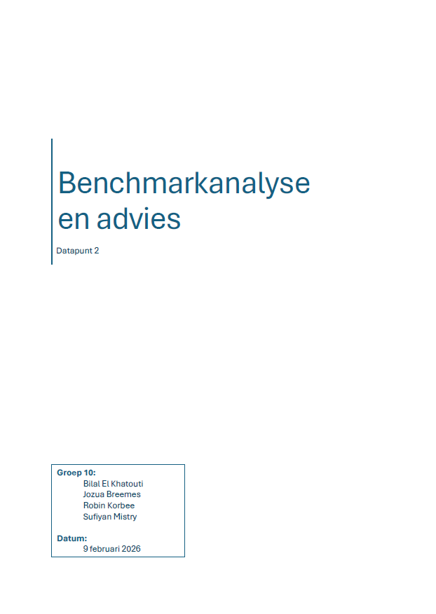
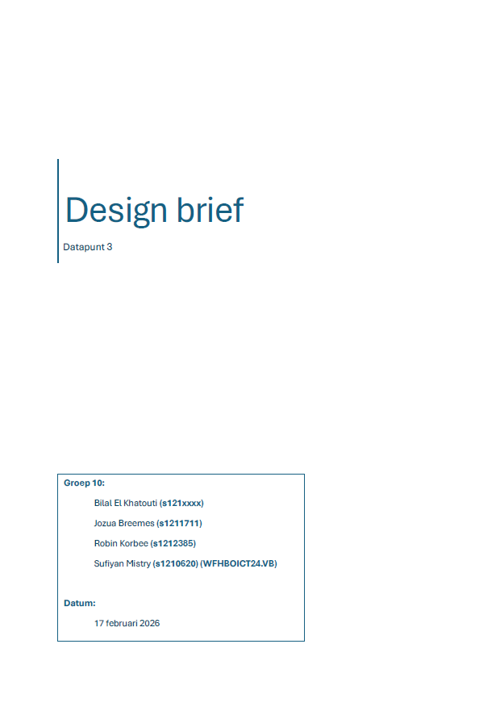
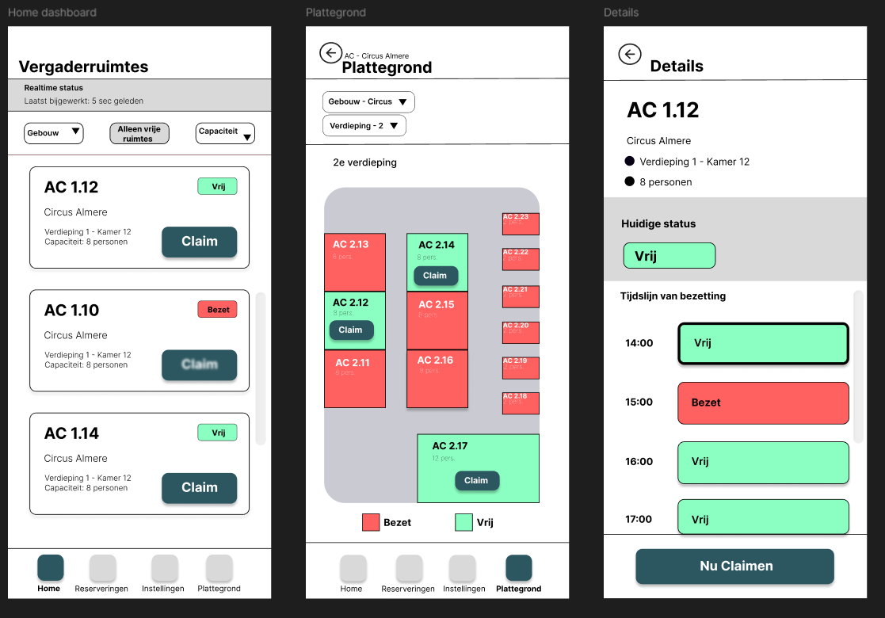

Cycle 1
Escape RoomDatapunt 1
Escape RoomWat heb ik gedaan?
Dit volgt nog.
Wat heb ik geleerd?
Dit volgt nog.
Op deze pagina presenteer ik mijn projecten per cycle. Per cycle kun je de bijbehorende datapunten bekijken, inclusief toelichting.
Dit volgt nog.
Dit volgt nog.
Ik heb samen met mijn projectgroep een benchmarkanalyse uitgevoerd naar applicaties voor het reserveren van vergaderruimtes. We hebben verschillende systemen vergeleken op functionaliteiten, toegankelijkheid en gebruikerservaring.
Ik heb geleerd hoe belangrijk het is om bestaande oplossingen kritisch te analyseren voordat je zelf ontwerpt. Hierdoor kreeg ik beter inzicht in gebruiksvriendelijke ontwerpkeuzes en verbeterpunten.

Samen met mijn projectgroep heb ik een design brief opgesteld voor een mobiele applicatie waarmee medewerkers vergaderruimtes kunnen reserveren. We hebben de doelgroep en het probleem geanalyseerd en de belangrijkste projectkaders vastgelegd.
Ik heb geleerd hoe belangrijk het is om vooraf duidelijke ontwerpdoelen en randvoorwaarden te formuleren. Dit helpt om gerichter te ontwerpen en voorkomt misverstanden binnen een projectteam.

Tijdens dit datapunt heb ik individueel meerdere concepten uitgewerkt in low- en mid-fidelity wireframes in Figma. Ik heb gebruikersflows ontworpen, feedback verzameld en mijn ontwerp iteratief verbeterd.
Ik heb geleerd hoe wireframes helpen om ideeën visueel te testen en structuur aan te brengen in een applicatie. Door feedback te verwerken kreeg ik beter inzicht in gebruiksvriendelijkheid en visuele hiërarchie.

Samen met mijn projectgroep heb ik een high-fidelity prototype ontwikkeld op basis van eerdere wireframes en ontvangen feedback. We hebben het ontwerp getest en het eindprototype gepresenteerd.
Ik heb geleerd hoe belangrijk samenwerking en iteratief testen zijn bij het ontwikkelen van een digitaal product. Daarnaast heb ik ervaring opgedaan met het presenteren van een compleet ontwerpconcept.

Dit volgt nog.
Dit volgt nog.
Dit volgt nog.
Dit volgt nog.
Dit volgt nog.
Dit volgt nog.